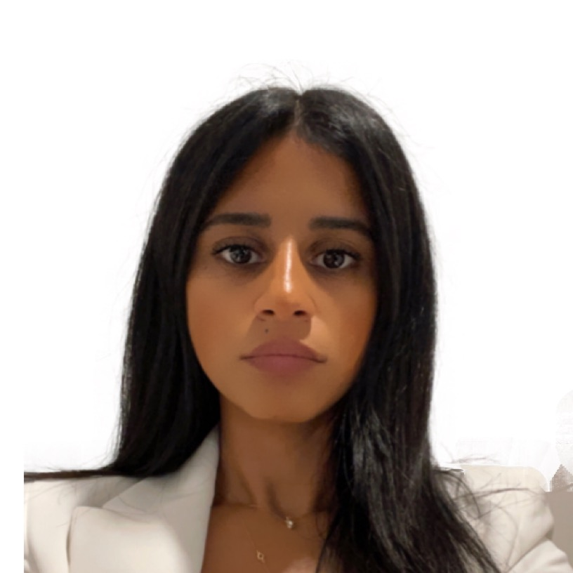

PI
Matt Bochman, PhD
Principal Investigator · Associate Professor & Chair, Molecular & Cellular Biochemistry Dept.
A yinzer from Pittsburgh, PA. Grew up as a runner and science geek, and focused on the latter at Juniata College in Huntingdon, PA, where in 2001 he lucked into an independent research position in the lab of Dr. Michael W. Morrow — and learned to love yeast and good beer.
Postdocs & staff
None currently — check back soon.
Graduate students
Michael Kumcu, MS
Biochemistry Graduate Program
Kait Taylor
Biochemistry Graduate Program

Noof Alsulaiti, MS
Genome, Cell & Developmental Biology (GCDB) Program
Kennadi Shumaker
Biochemistry Graduate Program
Undergraduate researchers
Alumni
David Nickens, PhD
An Indiana native and homegrown IU PhD. Knew his way around classical techniques but wasn't afraid to get his hands dirty with newfangled science — the lab's telomerase expert. (Current position to be added.)
Robert Simmons III, PhD
(Current position to be added.)
Spencer Gray, PhD
(Current position to be added.)
Rakshin Kharwadkar, MS, PhD
Now: Postdoctoral Research Fellow, Discovery Immunology, Genentech.
Max Andis, MS
Worked to characterize PIF1 DNA helicases. Now: Senior Associate Scientist at Janssen Pharmaceuticals, researching and developing CAR-T cell therapies.
Sara Metcalf, MS
Now: Research Assistant II, The Ohio State University.
Cody Rogers, PhD
Now: Postdoctoral Research Fellow, Patrick Sung Lab, UT Health San Antonio, studying regulation of DNA end resection during double-strand break repair.
Gabriella Fluhler, MS
Worked on the biochemical properties, over-expression, and purification of SftH, a RecQ4-family helicase from the archaeon S. solfataricus.
Chris Sausen, PhD
Now: Senior Scientist, Pfizer.
Renan E. A. Piraine, PhD
Works on microorganisms as biotechnological tools, mainly Pichia pastoris and Saccharomyces cerevisiae, from recombinant protein expression to fermented beverage production.
Undergraduate alumni
- Nur Nisaa Ahmad — Halal Executive cum Business Development Sr Executive, Furley Bioextracts
- Sanjana Ravindran
- Nick Buehler — MD student, Icahn School of Medicine at Mount Sinai
- Ashna Alladin, PhD — Associate Consultant, Life Science Strategy Consulting, IQVIA
- Joe Barry
- Edye Hansen
- Kara Osburn — Lab Microbiologist, NYC Department of Health
- Mindy Metz — sales team, Indianapolis tech startup The Juice (with Joe Barry, spearheaded the lab's mead fermentation research)
- Elsbeth Sanders — MS student, Minnesota State University, Gender and Women's Studies
- Phoebe Nguyen
- Alex Hurlock
- David Sun
- Chloe Wells
- Zachary Savin — 2021
- Morgan Roush — 2023
- Sukhpreet Saini — 2024–2025
- Taylor Lock — 2024
- Faith McDevitt — 2025
- Sidney Phongkhammeung — 2026
Lab protocols → (for current lab members and collaborators)